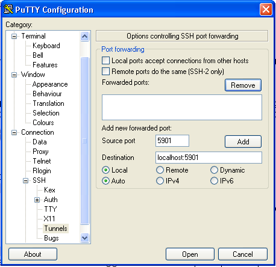
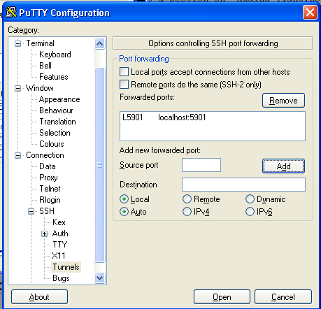
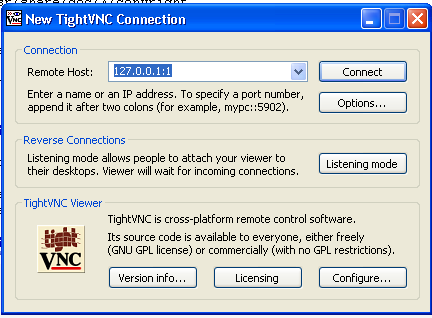

It is possible to have the Raspberry Pi's desktop visible as a window on a remote PC (also on a Android Tablet or iPad). Instructions to set it up can be found here:
http://adamdempsey.com/2012/04/how-to-setup-a-vnc-remote-connection-to-a-raspberry-pi/ -- I started with this one, it is short and simple but I think it contains errors
The process is quite straight forward but that guide gives a number of options that I was not wanting or needing and some aspects of using ssh tunneling were not clear to me until I read some man pages and tried it out.
I started off with the instructions at http://adamdempsey.com/2012/04/how-to- setup-a-vnc-remote-connection-to-a-raspberry-pi/ but he did not have his raspberry pi when he wrote that (that is what it says on the page) and I think the instructions need some tweaking. I will add some notes to that procedure. The procedure on the linked page should be used with these notes for some extra clarification.
Connect to the Raspberry Pi via SSH
As a word of explanation SSH is the Secure Shell used here just for remote
console operation. This is needed if the Raspberry Pi is headless (lacking a
monitor, keyboard and mouse) to provide a method to log into the Raspberry Pi
and set things up. More on SSH at remote-command-line-interface-cli.
Install a VNC server
This works just as stated. The server is installed on the Raspberry Pi.
clearly this only needs to be done once
Run startx in the background
I don't see this step when looking at instructions from others. It could be
that if the login that is being used has never run startx that there will be
some files missing. This does not need to be run in general and actually I
am not sure it needs to be run the first time either.
Start the VNC server (it will ask a password of your choice):
When I log into a ssh session I get asked for username and password. When
logging into a VNC session it only asked for a password (a screen number is
also used). The first time the VNC server is started within a ssh login you
are asked for a password. This password will be required later on the remote
machine. This needs to be done if the server is stopped or the Raspberry Pi
is restarted
Install a VNC client such as TightVNC for Windows.
Works as said. needs to be done on each computer or tablet one wants to be
able to get the desktop on. There is a version for the Android.
Start TightVNC Viewer (In Windows XP, Start->All Programs->TightVNC->TightVNC Viewer)
Works as said.
Enter the Raspberry Pi IP address and display number in "TightVNC Server:" field , e.g. 192.168.0.123:1, select your connection profile and click on Connect.
So here is where the error exists. The example should be more like
192.168.0.123:5901. That is for screen :1. It is possible to have more
than one screen available so it would be 5902 for screen :2.
It should now ask for the password you chose in step 4 and you should see LXDE desktop as shown below.
I use more than one login and each one can have a different password. One must
keep track of the screen number for the login you want if more than one is
active and use the corresponding password.
The simple method should be fine for a small network that is fire-walled from the internet. More security would be a good idea if it is possible someone might intercept the packets. VNC requires a password initially but there is no security beyond that. SSH encrypts the packets sent between devices and computers. It is possible to send VNC data through a SSH tunnel which will make the VNC secure by encrypting all the data between the Raspberry Pi and the remote computer/device.
Direction for this is given at
That site gives more information than necessary for just setting up VNC and a SSH tunnel for the Raspberry Pi if the remote client is on a windows computer. For example there is a section on "Adding Tightvnc to the startup". I'm not doing that since probably will not be using a remote desktop most of the time. It is not hard to start VNC from a SSH session.
student@raspberrypi ~ $ tightvncserver -localhost :1
Notes
that the student@raspberrypi ~ $ part is the Bash prompt for the student user login.
The essential difference between this and the example in the previous section is -localhost :1
With this switch tightvncserver does not respond to remote requests unless
they are channeled through a SSH tunnel. This means that tightvncserver will
not be listening at it's external IP address but at localhost which is
127.0.0.1. The rest of the reconfiguration is done at the remote end.
PuTTY is setup as before except an SSH tunnel is added.

The screenshot above shows how to add the port redirection information. Once the information has been typed in the add button is pressed the dialog will look as shown below:

The session can be opened by pressing Open.
The tightvnc viewer is lanched on a windows computer in the same way as before. The difference this time is that the address of the Raspberry Pi computer is not entered. 127.0.0.1 is the normal address for localhost and that is the number that is entered. Also for the port simply at :1 rather than :5901.

The password is entered as before.
We have one old netbook running Debian Linux. A VNC client was installed on it using the following:
(live)danp@USBcontroller:~$ sudo apt-get install ssvnc
This version of the client allows one to use a SSH tunnel (or not).
Here is a screen shot showing a Raspberry Pi LXDE desktop on the netbook debian LXDE desktop: